Your estimated class hours:
hrs on Scout
hrs on Soldier
hrs on Pyro
hrs on Demoman
hrs on Heavy
hrs on Engineer 
hrs on Medic
hrs on Sniper
hrs on Spy 
To find your class playtime and recorded playtime, go to your TF2 achievements in Steam. Then go to the "Records + Stats" tab. Below are the class playtimes, and the recorded playtime is on the right in a light grey box as "___ on record". The total playtime is the one shown beside the play button for TF2 in your library.
This is a very basic calculator that does some simple math to estimate what your class playtime would be if you hadn't reset your stats. It takes in your total hours played, recorded hours, and your class playtimes. With this, it turns the class playtimes into a percentage and applies it to your current total playtime. If you've played (relatively) more of a class since you reset your stats, then the results will be inaccurate since it only applies your relative class playtime to your total playtime. The resulting hours are truncated to an integer.
You're going to have to manually enter your hours since integrating the Steam API would be way more effort for me. Not very useful, but it was for practice.
If for some reason you wanted to report a bug or whatever, you can make an issue on the repository here.